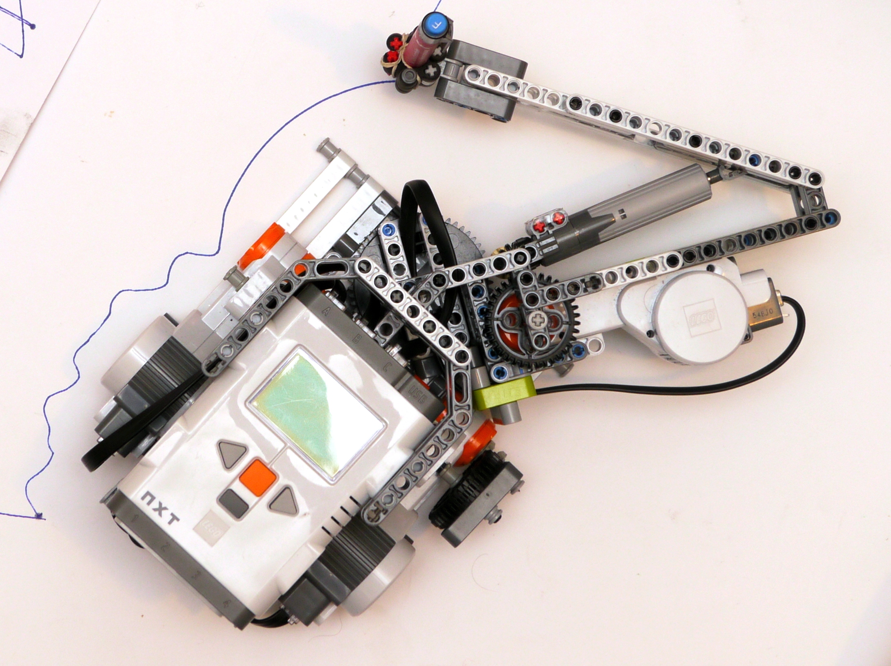
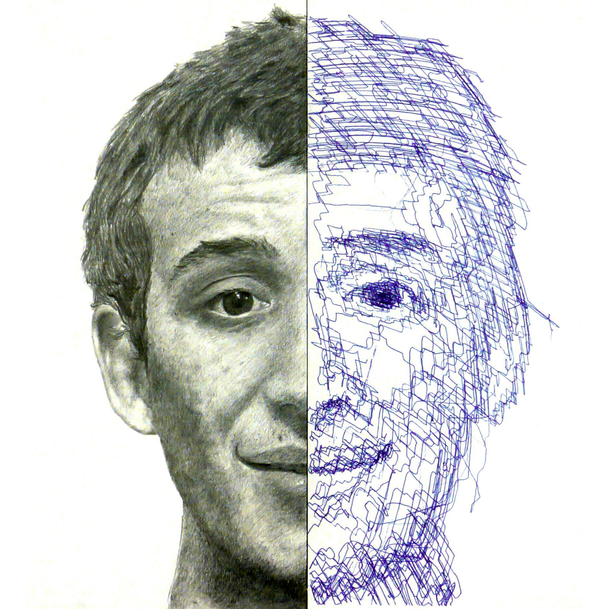
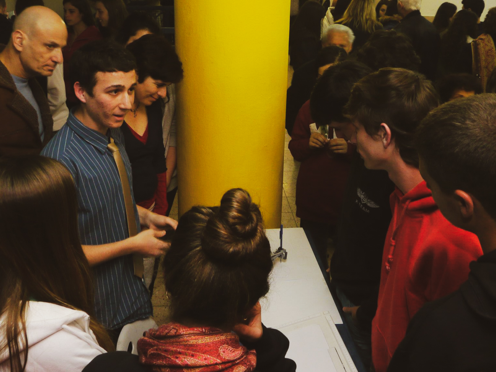

I, Robot
Capstone project combining art and technology

In high school, I pursued a transdisciplinary focus on four majors: Physics, Computer Science, Robotics, and Fine Arts. Completing my majors involved two capstone projects, one for Arts and one for Robotics. I decided to combine them.

Over the course of several weeks I designed and built a robotic arm capable of drawing. I used it to create a collection of six pieces, three of which I drew with my own hands using pencils and another three with the robot holding a pen.

The first pair of drawings is titled 'The Creation' and is a tribute to Michelangelo's `The Creation of Adam`. The second shows a pair of feet, titled 'One small step'. The final piece is a self portrait, titled 'I, Robot'.

The exhibition ignited fascinating conversations on the boundary between craft and manufacturing, and the relationships between man and machine. For me the project marked the first peak in a journey integrating science, technology, design, and art.

-2.jpg)
-2.jpg)